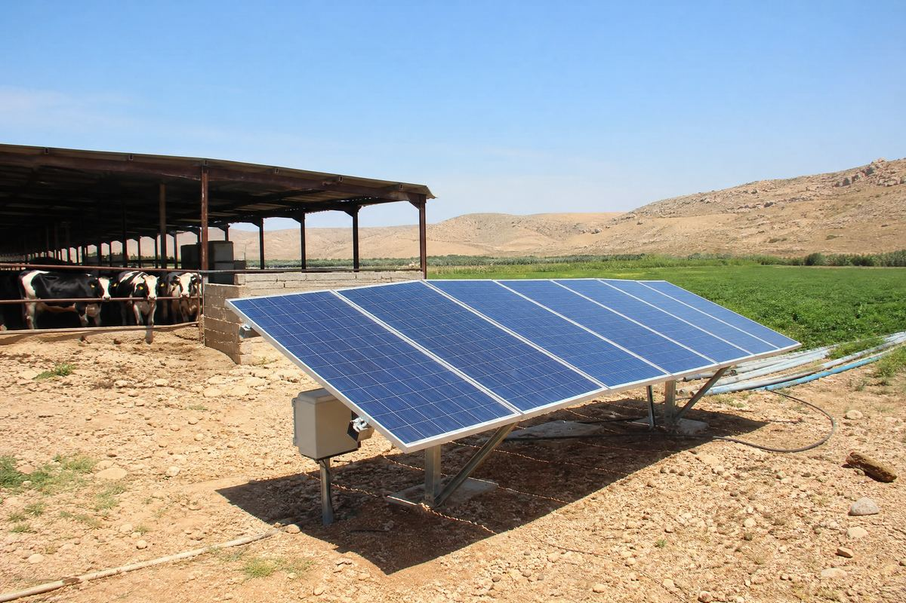

🔧 System at a glance
This is a hybrid system for a small dairy farm: an off-grid-friendly design with battery storage, so evening loads like milking, lighting and milk cooling work without grid power or a generator.
| Component | Specification |
|---|---|
| Solar panels | 8 × 625 W monocrystalline = 5,000 Wp (5.0 kWp) |
| Inverter | 5 kW hybrid inverter (solar + battery + grid/generator input) |
| Battery | 4.8 kWh LiFePO4 lithium (one 48 V rack unit, expandable) |
| Loads | Water pump (2 h/day), fodder chiller (24 h, ≈1 kW), LED lighting, milking machine (2 h/day), milk cooler (4 h/day) |
| Mounting & protection | Ground-mounted steel structure, south-facing ~30°, DC isolator, breakers, surge protection, earthing |
| Backup | Existing small generator kept as emergency backup for cloudy winter weeks |
Size your own array with the panel calculator and check the loads with the home backup calculator.
💡 Estimated energy output
With about 5.5 peak sun hours in northern Jordan and a realistic performance ratio of ~0.78 (heat, wiring, inverter losses), a 5.0 kWp array gives roughly:
| Component | Specification |
|---|---|
| Per day (summer) | ~21–22 kWh/day |
| Per day (winter) | ~15–17 kWh/day |
| Farm demand | ~20–24 kWh/day year-round (pump, fridge, lighting, milking, milk cooler) |
💰 Cost breakdown (Jordan, approximate)
Hybrid with battery — rough planning figures for Jordan (prices move, always get local quotes):
| Component | Specification |
|---|---|
| 8 × 625 W panels | ~900 – 1,400 |
| 5 kW hybrid inverter | ~600 – 900 |
| 4.8 kWh LiFePO4 battery | ~700 – 1,100 |
| Structure, cable, protection | ~400 – 600 |
| Total (hybrid with battery) | ~2,600 – 4,000 |
| Optional second battery (9.6 kWh) | + ~650 – 1,000 |
📈 Savings & payback
In the real example above, a cattle farm near Mafraq was paying roughly 200–300 JD per month combining electricity bills and diesel for the backup generator — plus real risk: when power dropped during evening milking, milk quality suffered immediately. The 5 kW hybrid system now covers almost all farm loads day and night, saving an estimated 150–250 JD per month, so the system pays back in about 1.5–2.5 years — after which farm energy is essentially free for the panels' 25+ year life.
Your farm may differ — check your own loads with the home backup calculator, size the battery with the battery calculator and run the payback in the ROI calculator, or design the whole system at once in the system report builder.
🛠️ Field note
We built this system for a cattle farm near Mafraq, Jordan: about 80 dairy cattle, 8 panels on a ground structure facing south at 30°, and a 5 kW hybrid inverter with one 4.8 kWh lithium battery. In Mafraq the summer heat pushes 40°C+ — panels lose a few percent there, so we sized the array a bit larger than the minimum. The farm used to rely on a diesel generator for evening milking; now the battery carries the milking machine, lights and milk cooler through the evening, and on a good day the generator does not run at all — that used to eat 150+ JD of fuel every month.
🧰 Design your own system
- Solar panel calculator — how many panels for your usage.
- Battery calculator — size backup storage.
- Inverter calculator — match the inverter to the array.
- ROI calculator — payback in your currency.
- Full system report — design the whole system in one page.
Running loads around the clock? See the guides on grid-tied vs off-grid vs hybrid and solar battery bank design. For your country's tariffs and payback, visit Solar by Country.
❓ Frequently asked questions
How big of a solar system does a cattle farm need?
Most small dairy farms run well on 4–6 kWp. A herd of 50–100 cattle needs roughly 20–25 kWh per day for the water pump, fodder fridge, lighting, milking and milk cooling — a 5 kWp hybrid system with a battery covers that reliably.
Can solar power run the milking machine at night?
Yes — that is what the battery is for. With about 4.8 kWh of lithium storage, evening milking, lighting and milk cooling all run off stored solar energy with no generator or grid power needed.
How much does a 5kW farm solar system cost in Jordan?
Roughly 2,200–3,400 JD for a hybrid system with battery in Jordan, including panels, hybrid inverter, battery, mounting and protection. A battery-less daytime-only setup would be 400–700 JD cheaper but cannot cover evening loads.
Is solar better than a generator for a cattle farm?
A diesel generator for a farm typically costs 150–300 JD per month in fuel and maintenance. The solar system replaces most of that, pays back in about 1.5–2.5 years and then runs free for 25+ years — plus it never leaves the milk uncooled when fuel runs out.
Note: all figures are approximate and for planning only. Production depends on your sun hours, shading and roof orientation; prices and tariffs vary and change over time. Always confirm with local installers and your electricity provider.